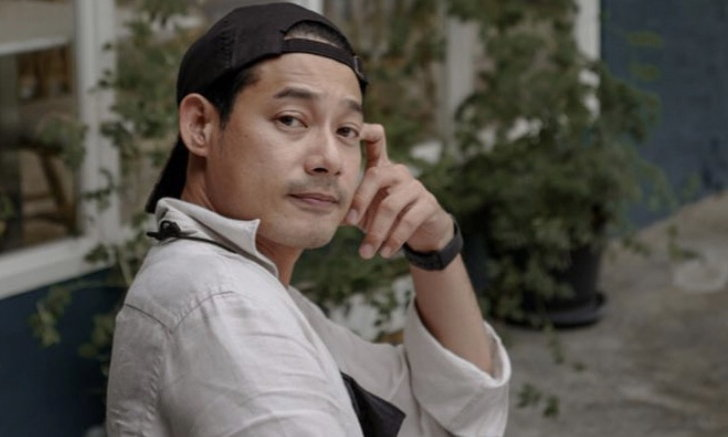

"โบว์-มิกค์" จัดทริปหวานสไตล์ฮิปเตอร์ น่ารักมุ้งมิ้งถูกใจแฟนคลับ
เรียกว่าทุกอย่างชัดเจนแล้วสำหรับคู่จิ้นที่ขยับมาเป็นคู่จริงแล้วอย่าง โบว์ เมลดา กับพระเอกหนุ่มคู่จิ้น มิกค์ ทองระย้า หลังจากที่ทั้งคู่เพิ่งออกมาเปิดใจว่ากำลังคบกันอยู่ แถมเรียกได้เต็มปากว่าเป็นแฟนกันแล้ว
และคู่ โบว์-มิกค์ ก็ขยันสาดความหวานใส่กันแบบรัวๆ แถมไม่ได้เก็บโมเมนต์ไว้ดูกันแค่สองคน อย่างทริปล่าสุดเมื่อ โบว์-มิกค์ มีเวลาว่างตรงกันก็นัดกันไปเที่ยวนอกเมืองสไตล์ฮิปเตอร์ ทั้งโมเมนต์มุ้งมิ้งที่ทั้งคู่ผลัดกันถ่ายลงไอจีสตอรี่ตอนที่กำลังนั่งกินสเต็กด้วยกัน
เรียกว่าทริปนี้จัดเต็มทั้งกินทั้งเที่ยว ซึ่งทางด้านมิกค์ ก็ลงรูปคู่โบว์ พร้อมกับแคปชั่นน่ารักๆ สั้นๆ ว่า "เจ้าแก่มป่อง" เป็นเอ็นดูเจ้าความรักของคู่นี้จริงๆ ทำเอาถูกใจแฟนคลับมาก จัดมาอีกเลยจ้าโมเมนต์หวาน แฟนคลับยังไหวอยู่
"ญาญ่า" เปิดใจ "โบว์ เมลดา" โดนโจมตีหนัก ดราม่าย้ายช่องแล้วมาเทียบชั้น
โมเมนต์แห่งรัก "โบว์-มิกค์" ควงแขนเปิดใจ ทุกอย่างชัดเจนแล้ว เรียก "แฟน" ได้เต็มปาก
"จั๊กจั่น" ควงแฟนเที่ยวทะเล เปิดทริปหวานครั้งแรกลงโซเชียล
เรียกว่าเซอร์ไพรส์แฟนๆ ไม่น้อย สำหรับนักแสดงสาวว่าที่เจ้าสาวอย่าง จั๊กจั่น-อคัมย์สิริ สุวรรณศุข หลังจากที่เพิ่งออกมาประกาศข่าวดี เผยภาพโมเมนต์สุดโรแมนติกที่แฟนหนุ่มนักธุรกิจ เค-วัฒนา เจริญศักดิ์วัฒนา คุกเข่าขอจั๊กจั่นแต่งงานไป
เพราะก่อนหน้านี้แทบจะไม่มีใครเคยเห็นเรื่องราวความรักของจั๊กจั่นมาหลายปีแล้ว จนกระทั่งประกาศข่าวดีดังกล่าว ซึ่งตัวจั๊กจั่นกับแฟนหนุ่มนั้นคบหาดูใจกันมา 2 ปีกว่าแล้วด้วย
ซึ่งภาพล่าสุดที่จั๊กจั่นโพสต์ลงอินสตาแกรม ก็เป็นภาพคู่หวานๆ ของจั๊กจั่นกับว่าที่เจ้าบ่าวที่ควงกันไปเที่ยวทะเลหัวหิน ซึ่งเหมือนจะเป็นทริปแรกเลยที่จั๊กจั่นเปิดตัวอย่างเป็นทางการโพสต์ลงโซเชียล
ทั้งคู่แต่งตัวเข้ากันน่ารักมากๆ จั๊กจั่นมีโพสท่าซบไหล่แฟนเบาๆ งานนี้มีแต่คนรอบข้างทั้งคู่ที่เข้ามาแซวถึงความหวานของว่าที่เจ้าบ่าวเจ้าสาวคู่นี้ที่ทำเอาน้ำทะเลหวานไปเลย
"เพชร กรุณพล" มาแล้ว! เคลื่อนไหว หลังโซเชียลพูดถึงจนชื่อติดเทรนด์ ฮอตชั่วข้ามคืน
กลายเป็นแฮชแท็กที่แพร่หลายกระจายทั่วโซเชียลเพียงชั่วข้ามคืน สำหรับแฮชแท็ก #เพชรกรุณพล ที่ชาวเน็ตสร้างขึ้นเพื่อพูดถึง นักแสดงหนุ่มมากความสามารถ เพชร-กรุณพล เทียนสุวรรณ เกี่ยวกับเรื่องที่เจ้าตัวเคยประกาศจุดยืนทางการเมืองเรียกร้องประชาธิปไตยอย่างชัดเจน จนทำให้ตอนนั้นเจ้าตัวถูกปลดจากละคร และเกิดผลกระทบอื่นๆ ตามมา
โดยชาวโซเชียลพากันส่งกำลังใจ และนำจุดยืนที่เพชร เคยออกมาแสดงตัวตนนั้น กลับมาสนับสนุนอีกครั้ง และยังช่วยกันโปรโมทงานและร้านคาเฟ่ของเพชร ส่งให้ชื่อของเขาถูกนำมาติดแฮชแท็กและถูกพูดถึงจนติดเทรนด์เพียงชั่วข้ามคืน แถมยังถูกเรียกว่า "แด๊ดดี้" อีกด้วย
ล่าสุดเจ้าตัวได้เคลื่อนไหวผ่านอินสตาแกรมส่วนตัว @petchkaroonpon โดยการโพสต์รูปตัวเอง และแคปชั่นว่า "เซรั่มดูแลแค่หน้า เซมามั้ยหละจะดูแลทั้งชีวิต ขอบคุณทุกกำลังใจนะครับ" ซึ่งก็มีชาวโซเชียลเข้ามาแสดงความคิดเห็นให้กำลังใจหนุ่มเพชรมากมาย
"คิมเบอร์ลี่" ปล่อยภาพแซ่บทริปสมุย ฝีมือ "หมาก ปริญ"
เป็นมากกว่าแฟนไปแล้วจริงๆ สำหรับคู่ MK พระเอกหนุ่ม หมาก ปริญ กับนางเอกสาว คิมเบอร์ลี่ เพราะคู่นี้มีความสนิทจนเหมือนเป็นครอบครัวเดียวกันไปแล้ว เรียกว่าแต่ละฝ่ายก็เข้ากับอีกครอบครัวได้ดี
โดยเฉพาะช่วงนี้ที่มีทริปครอบครัวแบบถี่ๆ เพราะก่อนหน้านี้ก็เพิ่งเห็นคิมเบอร์ไปเที่ยวพร้อมหน้ากับครอบครัวหมาก และล่าสุดก็จัดอีกหนึ่งทริปครอบครัวพากันไปเที่ยวทะเลสมุย
แม้ว่าจะไปกันหลายคน แต่ทริปนี้ก็ยังได้เห็นภาพความหวานของ หมาก-คิมเบอร์ลี่ ผ่านโซเชียลในหลายมุม อย่างโมเมนต์ที่จับมือกันนั่งดูวิวทะเลที่คิมเบอร์ลี่โพสต์ลงสตอรี่นั้นโรแมนติกมาก
รวมถึงทริปนี้หมาก ปริญ ก็ทำหน้าที่เดิมเป็นตากล้องให้คิมเบอร์ลี่ โดยเฉพาะคิมเบอร์ลี่ในชุดว่ายน้ำ ตั้งแต่ชุดวันพีซที่แอบเซ็กซี่เว้าหลัง หรือจะเป็นชุดว่ายน้ำกับท่าโพสต์ขเดินขึ้นบันไดของคิมเบอร์ลี่ก็เซ็กซี่ไม่เบา คิมเบอร์ลี่สวยมากแถมตากล้องก็ฝีมือดีถูกใจ